Model dlouhý 1,33 m postavený kolem řídicího modulu Holland SUB 90. Manuál vede krok za krokem: nejdřív změříte modul, pak vytisknete a vyzkoušíte malé zkušební díly, teprve potom tisknete celou ponorku, lepíte a zkoušíte ve vodě. U každého kroku je kontrola a co dělat, když to nejde.
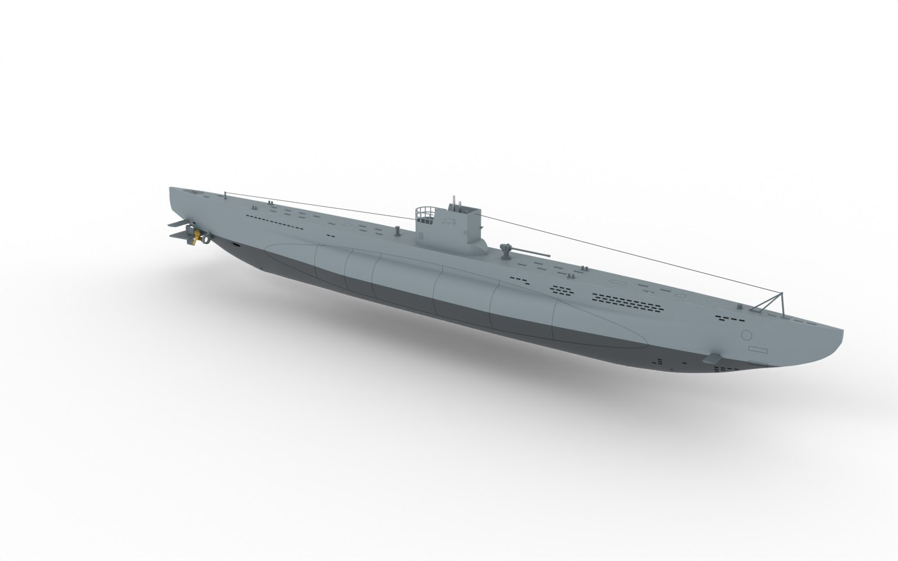
Rozložte ponorku na díly, rozřízněte ji, schovejte, co nepotřebujete, a prohlédněte si každý díl zvlášť.
Tip: klikněte na díl a uvidíte, co to je a jestli se hýbe. Tažením otáčíte, kolečkem nebo dvěma prsty přibližujete, pravým tlačítkem nebo dvěma prsty posouváte.
Trup je zaplavovaný, voda volně proudí dovnitř i ven. Suchá je jen plexi trubka modulu. V ní je přijímač, regulátor, akumulátor, dvě serva a čerpadlo, které plní a vyprazdňuje vak.
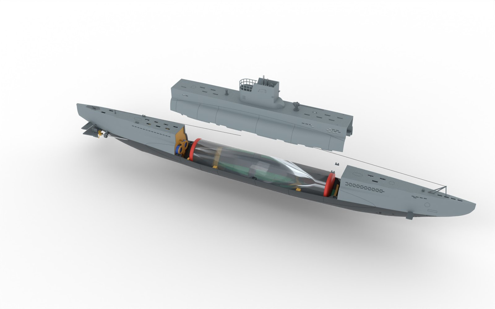
poklop s věží zvednutý, modul v sedlech, za ním motory a hřídeleČerpadlo napustí vak a ponorka klesá. Když vak vyprázdní, vyplave. Funguje i na místě, bez jízdy.
Dva motory LICHIFIT pohánějí přes hřídele Ø4 dva třílisté šrouby. Kabel motorů vede ze zadního víka modulu.
Dvě serva v modulu táhnou přes měchy dvě táhla. Spodní táhlo ovládá obě svislá kormidla, horní táhlo hloubková kormidla na zádi.
Olovo leží v 11 vaničkách na dně, pod modulem a v přídi. Vaničky drží tvarem, takže se olovo nepřesouvá. Otvory v palubě při ponoření vypustí vzduch, který by jinak ponorku nadnášel.
Modul Holland SUB 90 už máte, včetně přijímače, čerpadla, serv a O‑kroužků. Ceny jsou ověřené na stránkách obchodů 11. 11. 2026, kde ověřit nešly, je to napsané.
| Díl | Kolik | Kde | Cena | Na co |
|---|---|---|---|---|
| Podvodní motor LICHIFIT 7,4 V, pár CW + CCW | 1 pár | Amazon.de | neověřeno | Holland má jeden motor, U‑47 dva šrouby. Průměr hřídele motoru změřte. |
| Kuličkové ložisko 624ZZ (4 × 13 × 5) | 2 (2 máte) | Hadex | 8 Kč/ks | hřídele šroubů |
| Mosazná tyčka Ø4 mm, 1 m | 1 | Astramodel | 229 Kč | 2 hřídele 254 mm, hřídel hloubkových kormidel 56 mm |
| Mosazná tyčka Ø3 mm, 1 m | 1 | Astramodel | 169 Kč | 2 čepy svislých kormidel 40 mm |
| Mosazná trubka 4 × 3,1 mm, 1 m | 1 | Astramodel | 119 Kč | vedení táhel (322 a 324 mm), periskopy |
| Drát pružinová ocel 1,5 mm, 1 m | 1 | Astramodel | 29 Kč | táhla 352 a 363 mm, spojovací tyčka kormidel 70 mm, krátký drát k páce 30 mm |
| Pájecí koncovka M2 pro drát 1,6 (5 ks) | 1 balení | Astramodel | 79 Kč | spojení táhel s táhly modulu |
| Neodymový magnet 10 × 3 mm N52 (10 ks) | 2 balení | supermagnete.cz | 6,20 € | poklop (12 ks: 6 ve spodku, 6 v poklopu) |
| PLA šedé 1 kg (Prusament Gravity Grey) | 3 | Prusa | 599 Kč/ks | všechny díly a zkoušky, 2,17 kg; třetí cívka je rezerva na opakovaný tisk |
| Olověný plech 1 mm (střešní), nebo broky | asi 1,2 kg | klempířské potřeby, rybářské potřeby | neověřeno | zátěž do vaniček. Plech nastříhaný na pásky se vejde lépe než broky. |
| Dvousložkový epoxid (UHU Plus Endfest) | 1 | Kaufland, papírnictví | neověřeno | spoje trupu pod vodou |
| Spojka motor–hřídel: silikonová hadička nebo pružná spojka | 2 | podle průměru hřídele motoru | neověřeno | spojení motoru s hřídelí Ø4 |
| Stavěcí šroubek M3 × 4 | 2 | železářství | neověřeno | lodní šrouby na hřídeli |
| Šroubek M2 × 6 (do plastu nebo metrický) | 6 | železářství, modelářství | neověřeno | páka hloubkových kormidel (1), spojka kormidel (2), servisní víčko (2), 1 rezerva |
| Šroub M3 × 20 s válcovou hlavou a matice M3 | 2 + 2 | železářství | neověřeno | třmen motorů |
| Stavěcí kroužek na hřídel Ø4 mm | 4 | modelářství | neověřeno | zachytí tah vrtulí, po dvou u ložiska každé konzoly |
| Svorkovnice („lustr svorka“) 2,5 mm², mosazná vložka | 1 | elektro | neověřeno | z jedné svorky vyloupnete mosaznou vložku se dvěma šroubky: spojí drát od páky hloubkových kormidel s táhlem |
| Pryž 1 mm (kousek duše) a tavné lepidlo nebo silikon | trochu | doma | – | podložka pod třmen motorů, zajištění příďových vaniček |
| Rybářská šňůra 0,5 mm | 1,5 m | rybářské potřeby | neověřeno | lano proti sítím |
| Volitelně: lodní šroub Raboesch Ø35 M4, levý / pravý | 1 + 1 | Astramodel | 659 Kč/ks | místo tištěných šroubů, na hřídel je potřeba závit M4 |
Posuvné měřítko, kuchyňská váha, odměrka, vrtáky 1,6 / 1,7 / 2,5 / 3,1 / 4,1 mm, šroubovák na M2 s dlouhým dříkem, pinzeta, nůžky na plech, smirkový papír 240 a 400, isopropylalkohol, malé kleště, pájka (koncovky táhel), páska, fix.
Vysílačky na 2,4 GHz (např. TX16S s ELRS) ztratí spojení hned pod hladinou. Použijte přijímač 40/41 MHz z modulu Holland. Anténní drát veďte natažený po horní straně trubky modulu, zastrčený pod oba O‑kroužky. Věž je na snímatelném poklopu, proto do ní anténa nevede.
Model je spočítaný na rozměry z výkresů modulu Holland. Některé věci se z výkresů zjistit nedají, ty změříte sami. Vyplňte tabulku. Když hodnota sedí, pokračujte. Když nesedí, udělejte, co je ve sloupci vpravo.
| # | Co změřit a jak | Počítáno s | Naměřeno | Když nesedí |
|---|---|---|---|---|
| 1 | Natočení desky v modulu. Postavte modul na stůl tak, aby ouška zadního víka (dva výstupky s otvory) byla svisle nad sebou. Podívejte se, jak leží vnitřní deska se servy a čerpadlem. | deska vodorovně, tolerance ±25° | Do ±25° je vše v pořádku, modul se jen pootočí v sedlech. Při větším natočení se ouška nevejdou do trupu. Model je potřeba přepočítat s jiným natočením (parametr v generátoru u47_big.py). | |
| 2 | Průměr trubky na třech místech. | 90,0 mm | Sedla mají otvor 90,8 mm. Do 90,6 mm v pořádku. Při větším průměru sedla přebruste, při menším podlepte páskou. | |
| 3 | Délka modulu od čela zadního víka (ouška) po čelo předního víka. | nejvýš 471 mm | Kratší modul: mezeru k přednímu dorazu vyplňte podložkou (zbytek PLA). Delší než 471 mm: přední doraz přebruste nebo vynechte a modul jistěte jen O‑kroužky. | |
| 4 | Ouška zadního víka: celková výška přes obě ouška. | 102,7 mm | Do 104 mm v pořádku (vůle 0,7–4 mm podle natočení). Víc: napište, model se upraví. | |
| 5 | Měchy a táhla za víkem. Změřte, jak daleko za čelo víka sahají měchy a konce táhel serv. | do 45 mm | Delší: zkraťte mosazné trubičky v trupu o rozdíl. Kratší: táhla prodlužte pájecí koncovkou M2 a kouskem drátu. | |
| 6 | Zdvih táhel serv. Zapněte vysílač i modul, dejte páku do krajních poloh a měřte, o kolik se konec táhla posune. | ±4 mm | Svislá kormidla potřebují ±3,8 mm, hloubková ±4,2 mm. Větší zdvih stáhněte ve vysílači (koncové body, EPA). Menší: táhlo zavěste dál od osy páky serva. | |
| 7 | Hmotnost modulu komplet s akumulátorem, na kuchyňské váze. | 1190 g (odhad) | Spočítejte olovo podle vzorce ve fázi 4. Ponorka se vždy dovažuje ve vaně. | |
| 8 | Objem vaku. Napusťte vak čerpadlem do plna, vypusťte do odměrky. | 250 ml (odhad) | Pod 150 ml bude ponorka na hladině hluboko. Doporučený rozsah je 200–400 ml. | |
| 9 | Hřídel motoru LICHIFIT: průměr a délka, po sundání vrtule. | Ø2,3–3,2 mm, ~26 mm | Podle průměru vyberte spojku na hřídel Ø4 (silikonová hadička nebo pružná spojka). | |
| 9b | Tělo motoru LICHIFIT: průměr a délka válcového těla bez hřídele. | Ø31 × 50 mm | Průměr do 31,5 mm projde. Delší nebo kratší tělo vyrovnáte podložkami pod nožkami třmenu (viz fáze 3). Při průměru nad 31,5 mm napište, přepážky se přepočítají. | |
| 10 | Akumulátor je uvnitř modulu? | ano | Mimo modul nelze, v trupu není suché místo. Akumulátor musí být v trubce. | |
| 11 | Přijímač 40/41 MHz v modulu, anténní drát vyvedený ze zadního víka. | ano | 2,4 GHz pod vodou nefunguje. Bez dlouhovlnného přijímače ponorka nepoplave pod hladinou. | |
| 12 | Těsnost modulu. Modul bez trupu ponořte na 15 minut do vany, pak otevřete a zkontrolujte papírovým ubrouskem. | sucho | Vlhko: vyměňte nebo namažte O‑kroužky víček silikonovou vazelínou, zkontrolujte měchy a průchodky. Bez suchého modulu dál nepokračujte. | |
| 13 | Těžiště modulu. Položte hotový modul napříč přes kulatou tužku a posouvejte, až se vyváží. Změřte vzdálenost tužky od čela zadního víka. | 235 mm (polovina délky) | Jen si hodnotu zapište. Podle ní se ve fázi 4 posune olovo: těžiště modulu víc vzadu znamená olovo víc vpředu a naopak. Vaničky na to mají rezervu. |
Otevřete U47_zkousky_P1S.3mf. Jsou v něm dvě podložky s malými výřezy trupu a s díly mechaniky. Vytisknete tak přesně ty spoje, na kterých záleží, a ověříte je s modulem, motory, mosazí a ložisky, které máte doma. Díly mechaniky jsou skutečné díly, po zkoušce je rovnou použijete.
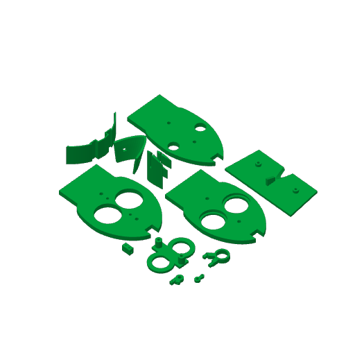
přepážka motor 2, přepážka motor 1, přepážka hřídelí, stabilizátor, třmen motorů, vanička D, zk_zad_spodek, konzola P, páka hloubkových, spojka kormidel, páka kormidla, hloubkové kormidlo, kormidlo horní, kormidlo dolní
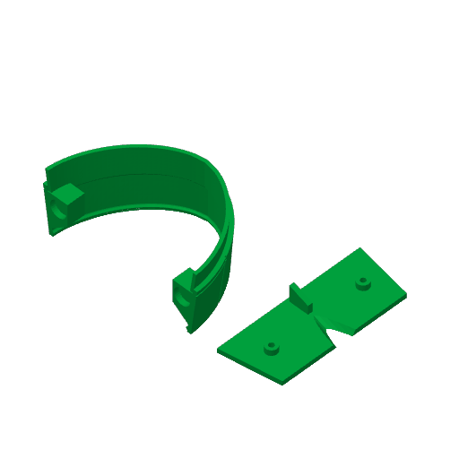
zk_poklop_oka, zk_trup_sedlo, sedlo 1, zk_spodek_navazny, zk_spodek_oka, zk_zad_vrch
Díly: zk_trup_sedlo (úsek spodku s drážkou) a sedlo1.
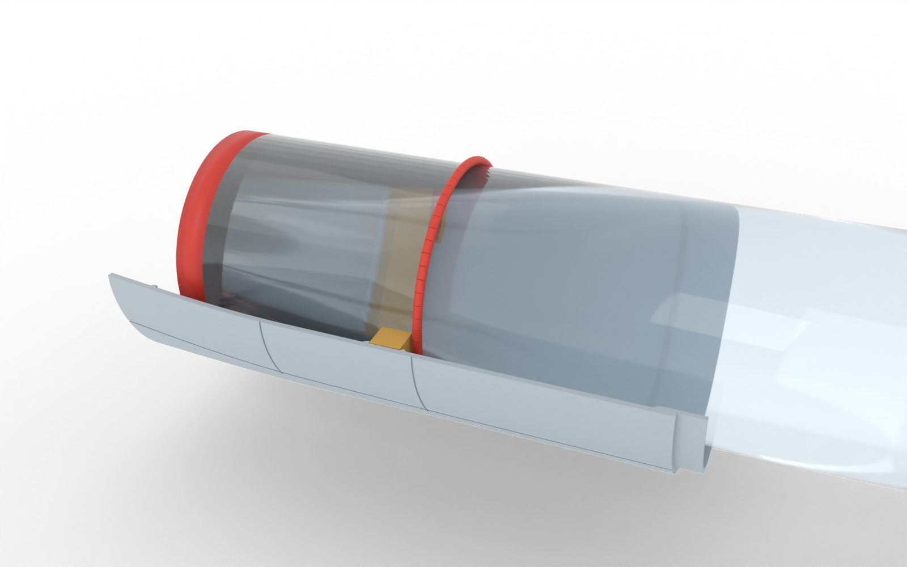
Díly: zk_spodek_oka (konec spodku 2 s vnitřním límcem) a zk_spodek_navazny (začátek spodku 3).
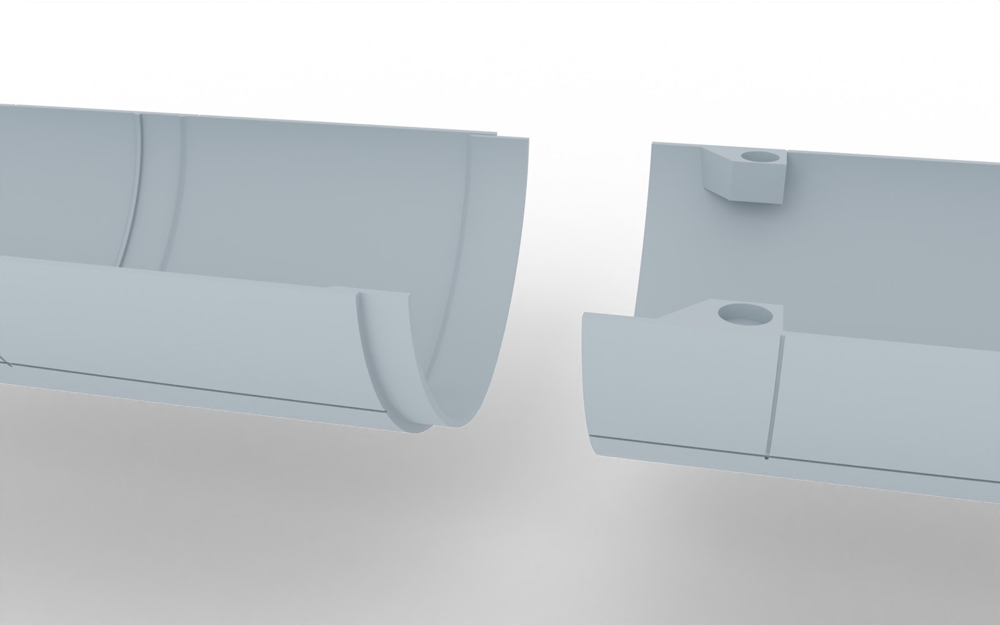
Díly: zk_poklop_oka (začátek poklopu s lemem a oky) a zk_spodek_oka.
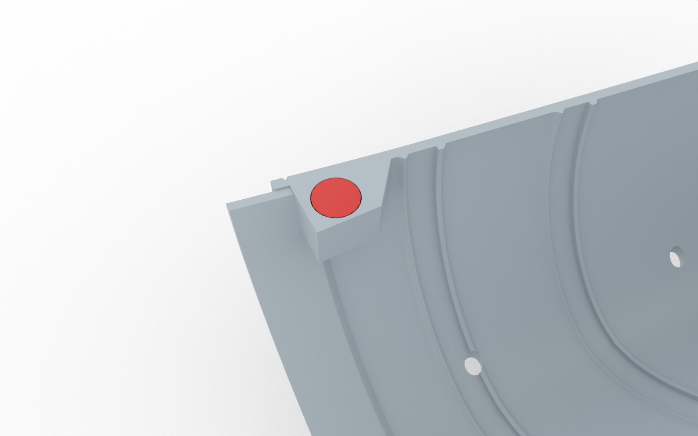
Díly: prepazka_motor1, prepazka_motor2, trmen_motoru, 2 šrouby M3 × 20, 2 matice M3 a oba motory.
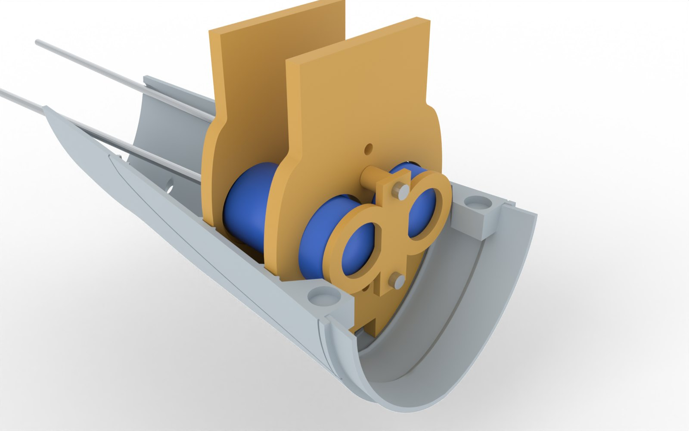
Díly: zk_zad_spodek, zk_zad_vrch (výřezy zádě s otvory) a konzola_hridele_P.
Díly: stabilizator, kormidlo_horni, kormidlo_dolni, paka_kormidla, spojka_kormidel, hloubkove_kormidlo, paka_hloubkovych, prepazka_hridel, vanicka_D.
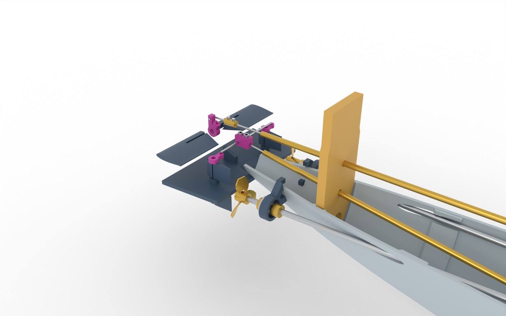
Tiskárna, vůle, motory i modul sedí na model. Pokračujte fází 2. Zkušební díly si schovejte: sedlo 1, přepážky motorů, přepážku hřídelí, třmen, stabilizátor, vaničku a díly mechaniky použijete rovnou ve stavbě a v celém tisku je můžete vynechat.
| Pořadí | Podložka | Čas | Co na ní je |
|---|---|---|---|
| 1. | Podložka 5 | 3,6 h | stabilizátor, doraz, přepážka záď, vanička C3, vanička C1, vanička C2, vanička B1, vanička B2, vanička D, vanička A, vanička E, vrtule CW, vrtule CCW, konzola L |
| 2. | Podložka 3 | 22,0 h | poklop 3, poklop 2, poklop 1, spodek 5, spodek 2 |
| 3. | Podložka 4 | 19,6 h | vrch příď 1, vrch záď 2, spodek 4, spodek 3, vrch příď 2, spodek 1 |
| 4. | Podložka 6 | 4,0 h | vrch záď 1, spodek 6 |
| 5. | Podložka 2 | 4,9 h | přepážka motor 2, přepážka motor 1, sedlo 2, sedlo 1, třmen motorů, podlaha můstku, zadní podlaha, vanička P2, konzola P, úvazník, naviják, kormidlo horní, kormidlo dolní, příďové kormidlo, sloupek lana, hlaveň |
| 6. | Podložka 1 | 7,3 h | stojan zad, stojan prid, přepážka hřídelí, věž, přední přepážka, řezač sítí, servisní víčko, vanička P1, dělo, vanička P3, páka hloubkových, lafeta Flak, spojka kormidel, páka kormidla, hloubkové kormidlo, sání, úvazník, příďové kormidlo |
U každé podložky klikněte na Slice plate a pak Print plate. Dlouhé podložky s díly trupu pouštějte na noc. Díly, které už máte ze zkoušek, můžete na podložce před tiskem odškrtnout (pravé tlačítko › tisknutelný).
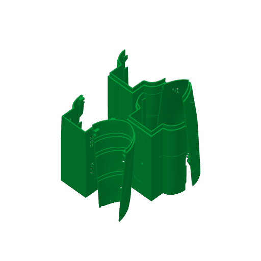
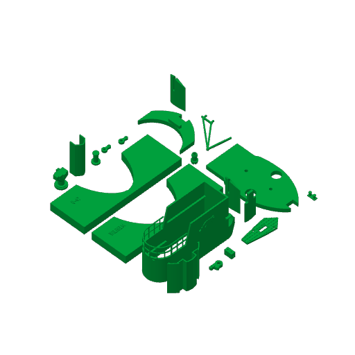
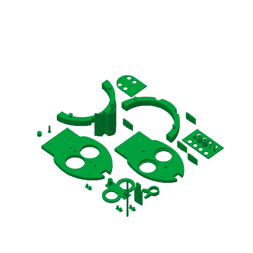
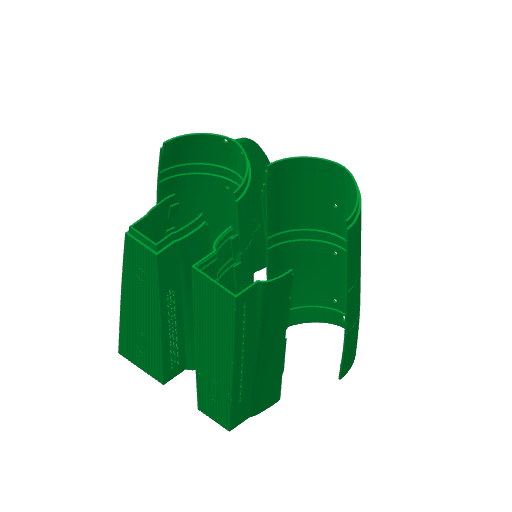
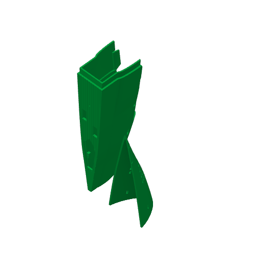
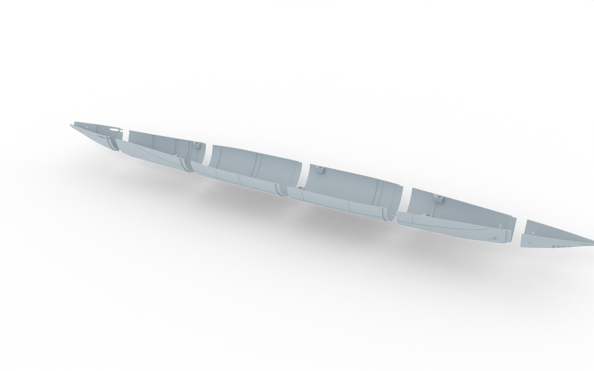
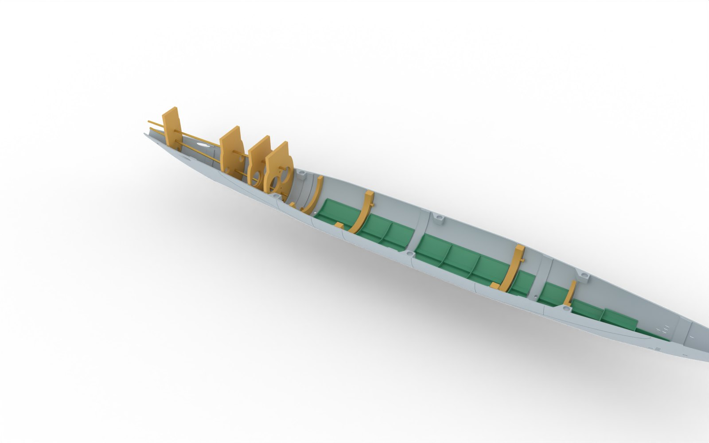
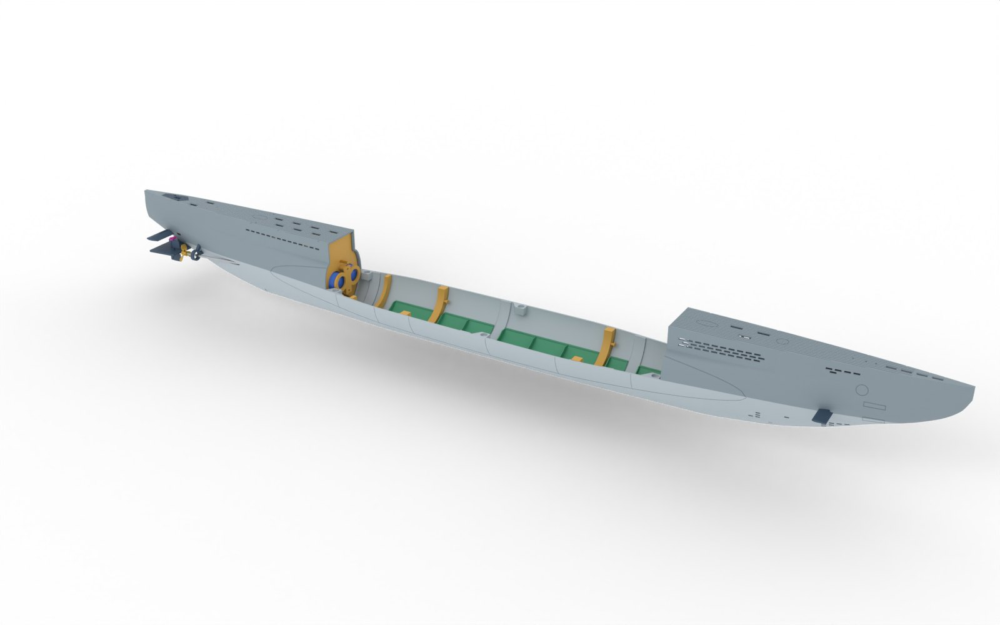
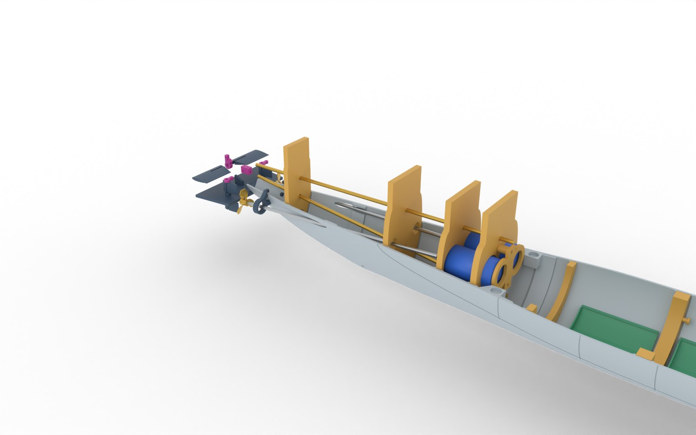
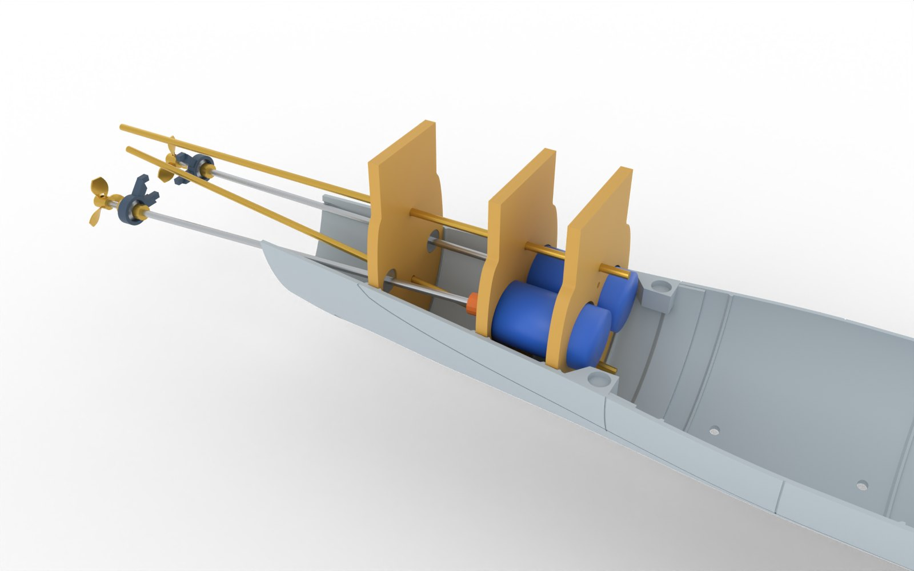
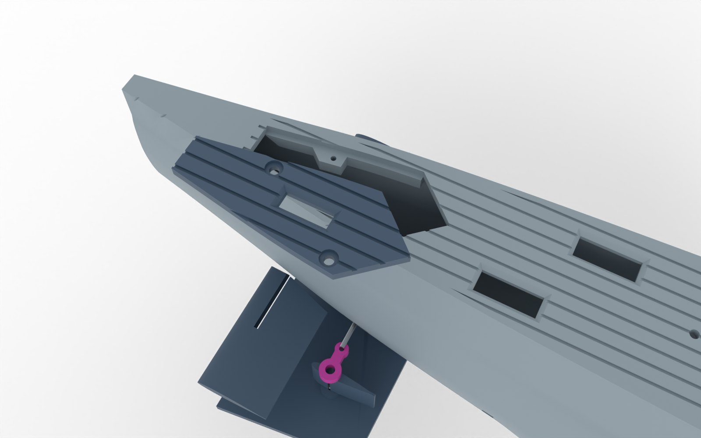
| Vanička | Délka | Kde leží | Střed od zádi | Pojme olova | Začněte s |
|---|---|---|---|---|---|
| A | 71 mm | pod zadní částí modulu, před dorazem | 516 mm | 194 g | 0 g |
| B1 | 43 mm | mezi sedly, hned za sedlem 1 | 591 mm | 141 g | 0 g |
| B2 | 43 mm | mezi sedly | 635 mm | 141 g | 96 g |
| C1 | 52 mm | mezi sedly, za spojem dílů 3 a 4 | 701 mm | 175 g | 175 g |
| C2 | 52 mm | mezi sedly | 753 mm | 175 g | 175 g |
| C3 | 52 mm | mezi sedly, před sedlem 2 | 805 mm | 175 g | 175 g |
| D | 27 mm | před sedlem 2 | 863 mm | 77 g | 77 g |
| E | 40 mm | pod předním víkem modulu | 915 mm | 83 g | 83 g |
| P1 | 48 mm | příď, pod zobákem přední přepážky | 969 mm | 128 g | 128 g |
| P2 | 51 mm | příď | 1020 mm | 156 g | 40 g |
| P3 | 51 mm | příď, nejvíc vpředu | 1071 mm | 57 g | 0 g |
„Pojme“ platí pro olověný plech nastříhaný na pásky. Broky pojmou asi o 15 % méně. „Začněte s“ je výpočet pro modul 1190 g s těžištěm uprostřed a vak 250 ml, celkem 950 g.
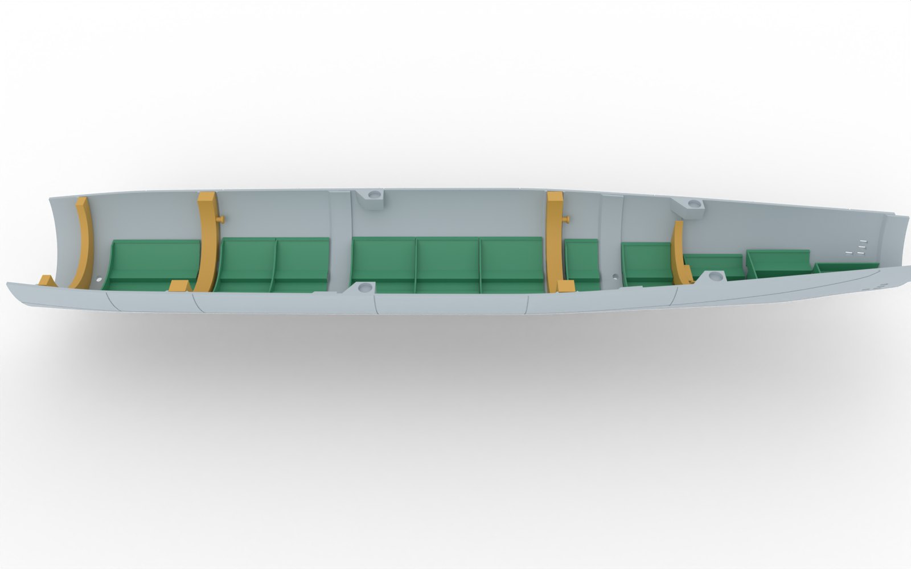
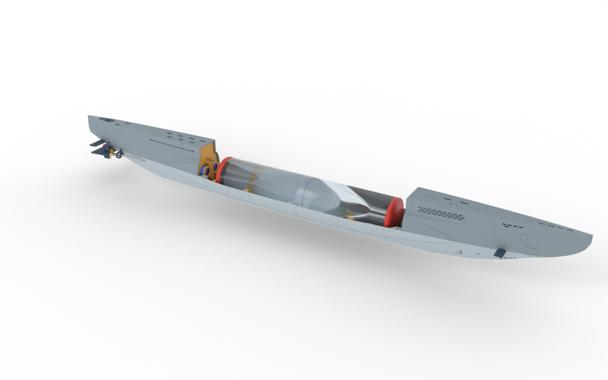
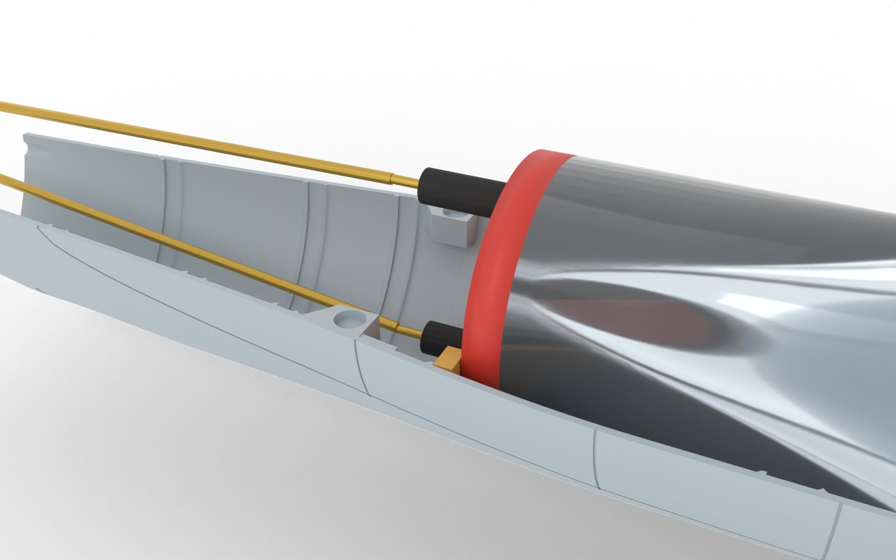
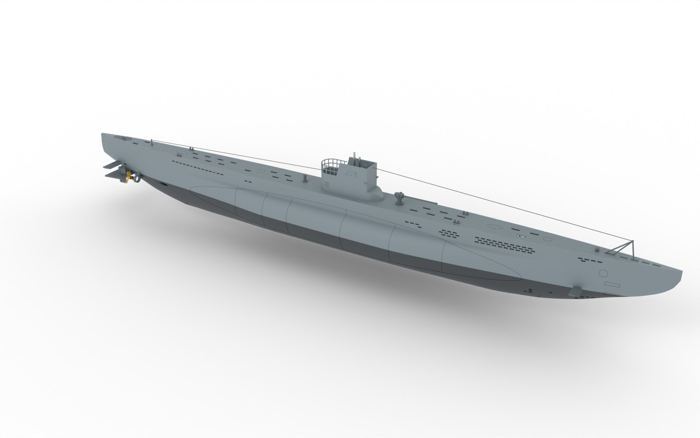
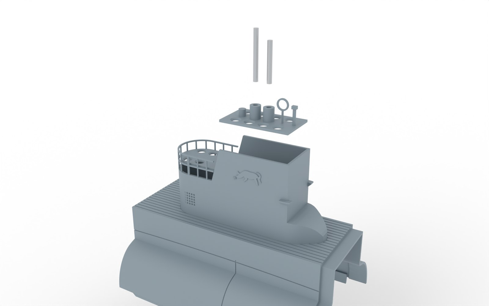
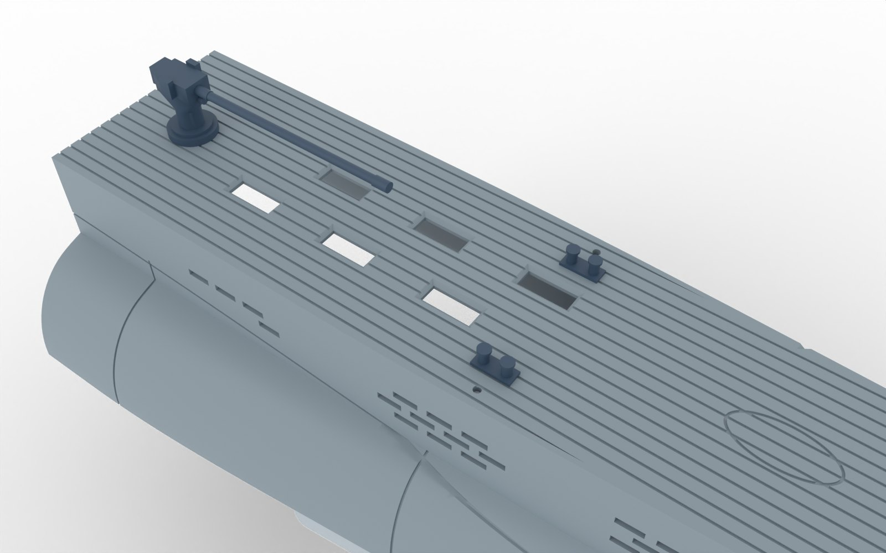
Horní část trupu a věž Dunkelgrau 51 (RAL 7000), spodek po čáru ponoru těsně pod řadami otvorů Schiffsbodenfarbe III Grau (RAL 7016). Paluba je dřevo napuštěné černě, jen přetřít tmavou lazurou. Býk na věži bíle. Před barvením plasty přebruste smirkem 400 a nastříkejte základ na plasty. Barvou nezalijte štěrbiny v palubě ani zatopovací otvory.
Kolik olova přibližně budete potřebovat, spočítáte z hmotnosti modulu a objemu vaku z fáze 0:
olovo ≈ 950 − 1,1 × (modul − 1190) − 1,1 × (vak − 250) g
Příklad: modul 1000 g, vak 400 ml → olovo asi 994 g. Vaničky pojmou dohromady 1502 g plechu.
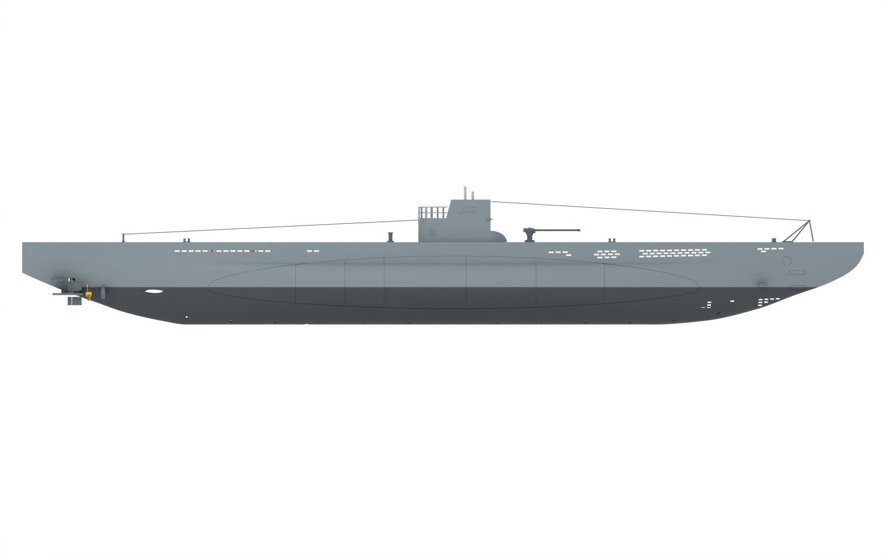
| Potíž | Pravděpodobná příčina | Co udělat |
|---|---|---|
| Díly trupu nejdou do sebe | tiskárna tiskne větší obrys | Kompenzace obrysu XY −0,05 mm, nebo přebrousit límec. |
| Modul se nevejde do sedel | trubka větší než 90,6 mm | Přebrousit sedla, viz fáze 0, bod 2. |
| Ouška víka narážejí do trupu | modul pootočený o víc než 25° | Pootočit modul, aby ouška byla svisle. Když to kvůli desce nejde, model se musí přepočítat. |
| Kormidla mají malý výchylku | malý zdvih serva | Táhlo dál od osy páky serva, koncové body ve vysílači na 120 %. |
| Kormidla drhnou | lepidlo v trubičce nebo na čepu | Vyčistit, převrtat 1,7 / 3,1 mm. |
| Hřídel jde ztuha | konzola není v ose | Konzolu rozlepit, srovnat podle hřídele, přilepit znovu. |
| Ponorka se nepotopí | vzduch pod palubou, málo olova nebo malý vak | Pohoupat pod vodou, až přestanou bubliny. Pak přidat olovo po 10 g. |
| Po každém ponoření plave jinak | zbytky vzduchu v trupu | Zkontrolovat, že štěrbiny v palubě a otvory pod věží nejsou zalepené barvou. Před jízdou ponorku pod vodou pohoupat. |
| Motor se v přepážce otáčí | volný třmen | Sundat modul, dotáhnout dva šrouby M3 třmenu, případně přidat pryž. |
| Hřídel se posouvá dopředu a dozadu | povolený stavěcí kroužek | Kroužky u ložiska konzoly jsou venku, dotáhnout imbusem. |
| Kormidlo se přestalo hýbat | povolený šroubek v zádi | Odšroubovat servisní víčko v palubě zádě, dotáhnout šroubky spojky, vložky a páky. |
| Poklop se při zvedání ponorky sundá | zvedání za věž | Zvedat za trup. Magnety drží jen poklop, ne váhu ponorky. |
| Ponorka se nevynoří | moc olova | Ubrat olovo, s prázdným vakem musí plavat. |
| Ztráta signálu pod vodou | 2,4 GHz nebo smotaná anténa | Přijímač 40/41 MHz, anténní drát natažený po trubce modulu, failsafe na vyprázdnění vaku. |
| Voda v modulu | O‑kroužek víka nebo měch | Vysušit, vyměnit nebo promazat O‑kroužek, zkontrolovat měchy. |
Kontrola prošla ve všech 37 bodech. Modul má k trupu vůli aspoň 0,5 mm. Každý díl je zkontrolovaný proti každému. Kormidla se natočí v plném rozsahu ±30° a ±25° včetně pák, tyčky, spojky a táhel. Navíc je simulovaná montáž: každý díl jde na své místo vložit předepsaným směrem, modul jde vyndat, motory vysunout, vaničky vyjmout.
Všechny díly jsou uzavřená tělesa. Každá vrstva je zkontrolovaná na převisy a na detaily tenčí než stopa trysky 0,4 mm. Bambu Studio naslicuje všech 6 podložek celé ponorky i obě zkušební podložky bez varování. Hotové projekty pro P1S jsem znovu načetl a naslicoval samostatně.
Simulace uvězněného vzduchu: po ponoření zůstane v trupu asi 7 cm³, z toho většinu vyplní magnety. Olovo 950 g se do vaniček vejde s rezervou (1502 g) a jde rozložit tak, aby ponorka ležela vodorovně i pro modul 1000 až 1400 g. Těžiště vychází 10,6 mm pod středem vztlaku, kyv trvá asi 0,9 s.
Poklop se vlastní vahou prohne o tisíciny milimetru. Trup zvednutý za konce je namáhaný na 2,0 MPa, PLA snese asi 22× víc. Šest párů magnetů udrží asi 4,6 kg, to stačí na poklop, ne na zvedání celé ponorky.
Odpor, rychlost a chování za jízdy jsou inženýrský výpočet, ne měření. Hmotnost a těžiště modulu, objem vaku a odběr motorů jsou odhady, proto je změříte ve fázi 0 a ve vaně. Tvar trupu je moje přiblížení typu VIIB, ne přesný výkres žeber.
Natočení desky v modulu, délka měchů, zdvih serv, rozměry motoru, vůle spojů na vaší tiskárně a hlavně voda: nikdo tuto ponorku zatím nepostavil. Proto je tu fáze 0, zkušební tisky a vyvažování ve vaně.
Předloha: bokorys a popis úprav U‑47 v letech 1938–1941 od Dougieho Martindalea (Accurate Model Parts, U47_mods.pdf). Rozměry typu VIIB: Wikipedia. Řídicí modul a trup Holland: projekt Minialand.